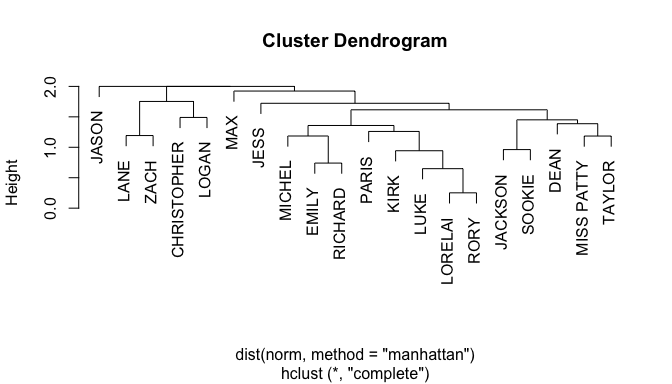
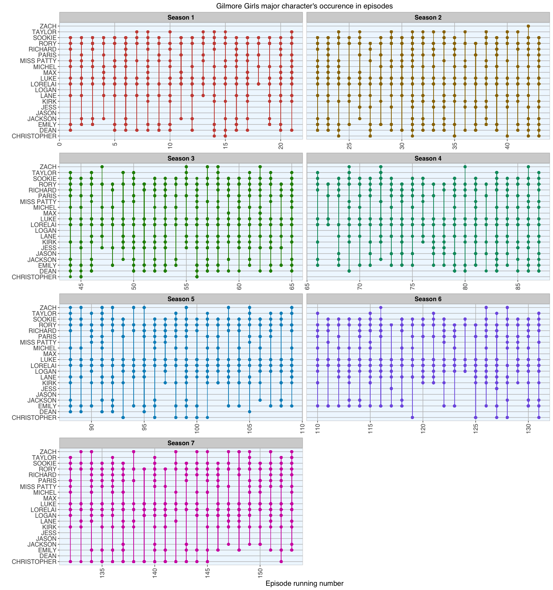

With the impending (and by many - including me - much awaited) Gilmore Girls Revival, I wanted to take a somewhat different look at our beloved characters from Stars Hollow.
I had recently read a few cool examples of how to create co-occurrence networks and wanted to combine this with an analysis similar to what David Robinson did for Love Actually.
Fortunately, there are people out there, who have invested their time (and a lot of it, I imagine) to write up transcripts for every Gilmore Girls episode. I chose www.crazy-internet-people.com’s list of transcripts.
Based on these transcripts I calculated the main character’s number of lines per episode and from there the co-occurrence matrix with other characters. This told me with which other major characters they appeared together in episodes and how often. This network nicely illustrates that Lorelai has the most lines of all characters (node size reflects total number of lines in all episodes a character had), followed by Rory. No surprise there but interestingly, the third place goes to Luke and fourth to Emily. Most interaction happened between Lorelai and Rory of course (edge width reflects number of co-occurences in episodes), but Lorelai and Luke, Rory and Luke, Emily and Rory and Lorelai and Sookie follow suit. What the network also shows is that Lorelai has major connections with most other characters - more so than Rory.

A cluster dendrogram shows us the character co-occurrence in a slightly different way: The further down in the dendrogram tree two nodes split, the more episodes these characters had in common. Again, no surprise here that Lorelai and Rory have the most closely connected nodes, closely followed by Luke. We can also see quite nicely that the couples Sookie and Jackson, Lane and Zack and Emily and Richard share a lot of episodes.

Of course, these numbers also reflect the total number of episodes that characters were in, so that there is an inherent bias for characters with short occurrences in many episodes being more strongly connected to e.g. Lorelai than characters with fewer but more important plots. It would have been interesting to calculate the co-occurrence per scene instead of episode but unfortunately, this information was not given in the transcripts (if someone knows transcripts that denote scene number, please contact me).
I also wanted to see in which episodes these 20 characters appeared. Of course, Lorelai and Rory appeared in every episode but for other characters, there are clear gaps.

And finally, I wanted to know how many lines per episode each of them spoke: This boxplot shows the median number of lines per episode for each character (middle line of the boxes), as well as the lower and upper quartiles (outer edges of the boxes) and the outlier episodes (dots).

There will be a part 2 next week, where I will explore the Gilmore Girls a bit more. No spoilers, but among other things, I’ll be looking at their coffee consumption through the data lens…
For a detailed description, plus R code for the plots see further below or find the R Markdown on Github.
If you don’t care about the show and have not (unlike me) watched every episode at least twice, maybe you’ll be interested in using my R code to recreate a similar character network for other TV shows, movies or books (and if you do, please share them with me)!
Obtaining all episode transcripts
The transcript URLs from www.crazy-internet-people.com have the following scheme: “http://www.crazy-internet-people.com/site/gilmoregirls/pages/, s#/, s#s/, §.html” (#: number of season, of which there are seven; §: running number of episode, from 1 to 153). Following this scheme, I looped over all seasons and episodes to read the lines for each HTML directly into R via their respective URLs.
Because the raw HTML looked a bit messy, I had to do some tidying of the text:
- First, I grabbed only lines with a character name at the beginning, which indicates the character who is speaking (these were all in caps).
- Then, I had to remove the remaining HTML tags/ descriptors.
- After this, I had the transcript text remaining, which I could transform into a data frame
- and add season, episode number and running episode number to each line of text.
- And finally, I combined all transcripts into one object.
for(i in 1:7){ # there are 7 seasons
if(i == 1){ # all seasons except the first have 22 episodes (the first has 21)
for(j in 1:21){
cat("\nSeason", i, ", Episode", j, "\n") # to see the progress I am printing the season and episode number
thepage <- readLines(paste0("http://www.crazy-internet-people.com/site/gilmoregirls/pages/s", i, "/s", i, "s/", j, ".html"))
thepage <- thepage[grep("^[[:upper:]]+:", thepage)] # grabbing character lines only
thepage <- gsub("\t", "", thepage) # removing HTML tags
thepage <- gsub("<.*>", "", thepage) # removing some more HTML tags
thepage <- as.data.frame(thepage)
thepage$season <- i # add season number
thepage$episode <- paste(i, j, sep = "_") # add episode number
thepage$episode_running_nr <- j # add running epsiode number
if(i == 1 & j == 1){ # combine all transcripts into one object
transcripts <- thepage
} else {
transcripts <- rbind(transcripts, thepage)
}
}
} else { # repeat for seasons 2 to 7
for(j in 1:22){
cat("\nSeason", i, ", Episode", j, "\n")
if(i == 2){ # to get the running episode number,
# I have to add the number of episodes from previous seasons
n <- j+21
}
if(i == 3){
n <- j+21+22
}
if(i == 4){
n <- j+21+22+22
}
if(i == 5){
n <- j+21+22+22+22
}
if(i == 6){
n <- j+21+22+22+22+22
}
if(i == 7){
n <- j+21+22+22+22+22+22
}
# rinse and repeat
thepage <- readLines(paste0("http://www.crazy-internet-people.com/site/gilmoregirls/pages/s", i, "/s", i, "s/", n, ".html"))
thepage <- thepage[grep("^[[:upper:]]{2,}:", thepage)]
thepage <- gsub("\t", "", thepage)
thepage <- gsub("<.*>", "", thepage)
thepage <- as.data.frame(thepage)
thepage$season <- i
thepage$episode <- paste(i, j, sep = "_")
thepage$episode_running_nr <- n
if(i == 1 & j == 1){
transcripts <- thepage
} else {
transcripts <- rbind(transcripts, thepage)
}
}
}
}
Some of the lines were empty, so I removed those.
transcripts$thepage <- as.character(transcripts$thepage) # convert to character vector
transcripts <- transcripts[!transcripts$thepage == "", ] # remove empty lines
This is how the data frame looked like at this point:
- each row contains one line of dialogue with the character name in caps coming before their lines.
head(transcripts)
## thepage season episode
## 1 LORELAI: Please, Luke. Please, please, please. 1 1_1
## 2 LUKE: How many cups have you had this morning? 1 1_1
## 3 LORELAI: None. 1 1_1
## 4 LUKE: Plus... 1 1_1
## 5 LORELAI: Five, but yours is better. 1 1_1
## 6 LUKE: You have a problem. 1 1_1
## episode_running_nr
## 1 1
## 2 1
## 3 1
## 4 1
## 5 1
## 6 1
To be able to count the characters, I separated the character names from their lines. This was done by splitting the first column after the first colon, using the tidyr package.
I also removed all leading and trailing whitespace from the character names, changed all letters in the character column to all caps and changed “ands” and apostrophes to the proper encoding. And I also had to manually correct quite a few misspelled character names.
# separate first column after first colon
library(tidyr)
transcripts_2 <- separate(transcripts, "thepage", into = c("character", "dialogue"), sep = ":", extra = "merge", fill = "right")
# remove leading and trailing whitespace
transcripts_2$character <- gsub("^\\s+|\\s+$", "", transcripts_2$character)
# convert all character names to all upper case
transcripts_2$character <- toupper(transcripts_2$character)
# fix misspelled character names
transcripts_2$character <- gsub("ZACK", "ZACH", transcripts_2$character)
transcripts_2$character <- gsub("LORLEAI", "LORELAI", transcripts_2$character)
transcripts_2$character <- gsub("LOREALI", "LORELAI", transcripts_2$character)
transcripts_2$character <- gsub("LORELI", "LORELAI", transcripts_2$character)
transcripts_2$character <- gsub("LORLAI", "LORELAI", transcripts_2$character)
transcripts_2$character <- gsub("LORELA$", "LORELAI", transcripts_2$character)
transcripts_2$character <- gsub("LORLELAI", "LORELAI", transcripts_2$character)
transcripts_2$character <- gsub("^ORELAI", "LORELAI", transcripts_2$character)
transcripts_2$character <- gsub("LOREAI", "LORELAI", transcripts_2$character)
transcripts_2$character <- gsub("^ORY", "RORY", transcripts_2$character)
transcripts_2$character <- gsub("LUK$", "LUKE", transcripts_2$character)
transcripts_2$character <- gsub("BABETE", "BABETTE", transcripts_2$character)
transcripts_2$character <- gsub("BABETTER", "BABETTE", transcripts_2$character)
transcripts_2$character <- gsub("BARBETTE", "BABETTE", transcripts_2$character)
transcripts_2$character <- gsub("BABETTE/MISS PATTY", "BABETTE AND MISS PATTY", transcripts_2$character)
transcripts_2$character <- gsub("JACKSON/SOOKIE", "JACKSON AND SOOKIE", transcripts_2$character)
transcripts_2$character <- gsub("LORELAI/SOOKIE", "LORELAI AND SOOKIE", transcripts_2$character)
transcripts_2$character <- gsub("LORELAI/RORY", "LORELAI AND RORY", transcripts_2$character)
transcripts_2$character <- gsub("TAYOR", "TAYLOR", transcripts_2$character)
transcripts_2$character <- gsub("TRISTIN", "TRISTAN", transcripts_2$character)
transcripts_2$character <- gsub("MICHE$", "MICHEL", transcripts_2$character)
transcripts_2$character <- gsub("MICHELL", "MICHEL", transcripts_2$character)
transcripts_2$character <- gsub("SOOKI$", "SOOKIE", transcripts_2$character)
transcripts_2$character <- gsub("SOOKEI", "SOOKIE", transcripts_2$character)
transcripts_2$character <- gsub("SOOKIES", "SOOKIE", transcripts_2$character)
transcripts_2$character <- gsub("Mrs.KIM", "MRS KIM", transcripts_2$character)
transcripts_2$character <- gsub("MRS.KIM", "MRS KIM", transcripts_2$character)
transcripts_2$character <- gsub("MRS KIM", "MRS KIM", transcripts_2$character)
transcripts_2$character <- gsub("RICHRAD", "RICHARD", transcripts_2$character)
transcripts_2$character <- gsub("RMILY", "EMILY", transcripts_2$character)
transcripts_2$character <- gsub("CHRISTOHPER", "CHRISTOPHER", transcripts_2$character)
transcripts_2$character <- gsub("CHRISTOPER", "CHRISTOPHER", transcripts_2$character)
transcripts_2$character <- gsub("CHRSTOPHER", "CHRISTOPHER", transcripts_2$character)
transcripts_2$character <- gsub("CHRIS$", "CHRISTOPHER", transcripts_2$character)
transcripts_2$character <- gsub("CHERRY", "SHERRY", transcripts_2$character)
transcripts_2$character <- gsub("LINDAY", "LINDSAY", transcripts_2$character)
# substitute ’ with apostrophe
transcripts_2$character <- gsub("’", "'", transcripts_2$character)
# some ANDs are written as & so they will be changed as well
transcripts_2$character <- gsub("&", "AND", transcripts_2$character)
# and finally I want ANDs to be written as semicolons
transcripts_2$character <- gsub(" AND ", ";", transcripts_2$character)
# and remove disclaimer lines
transcripts_2 <- transcripts_2[-which(transcripts_2$character == "DISCLAIMER"), ]
head(transcripts_2)
## character dialogue season episode
## 1 LORELAI Please, Luke. Please, please, please. 1 1_1
## 2 LUKE How many cups have you had this morning? 1 1_1
## 3 LORELAI None. 1 1_1
## 4 LUKE Plus... 1 1_1
## 5 LORELAI Five, but yours is better. 1 1_1
## 6 LUKE You have a problem. 1 1_1
## episode_running_nr
## 1 1
## 2 1
## 3 1
## 4 1
## 5 1
## 6 1
This is how the data frame looked like after tidying.
nrow(transcripts_2)
## [1] 116954
In total there are now 116,983 lines.
How many characters are there and how many lines do they have?
To find out how many characters there were in Gilmore Girls during 153 episodes, I couldn’t simply count them because there are combined characters (e.g. Lorelai and Rory speaking together) and voice overs among them.
First, I want to duplicate all lines with two speakers, to make them count for each character. I also want to only count lines where there is only one character, so I removed all character fields with multiple, generic or unspecific characters. And I don’t want to have voice overs either.
Most of the characters, however, were still not recurring characters, so I filtered out all those characters that only occurred in one episode.
# separating all rows where multiple characters spoke into one line per character with duplicate line text
library(splitstackshape)
transcripts_2 <- cSplit(transcripts_2, splitCols = "character", sep = ";", direction = "long")
# manually removing characters I don't want to keep
characters <- as.data.frame(table(transcripts_2$character, transcripts_2$episode)) %>%
subset(!grepl(" VOICE", Var1)) %>%
subset(!grepl("^ALL", Var1)) %>%
subset(!grepl("AS A GROUP", Var1)) %>%
subset(!grepl("CROWD", Var1)) %>%
subset(!grepl("RADIO", Var1)) %>%
subset(!grepl("BIKERS", Var1)) %>%
subset(!grepl("ANNOUNCER", Var1)) %>%
subset(!grepl("BOTH", Var1)) %>%
subset(!grepl("WOMAN", Var1)) %>%
subset(!grepl("VOICE", Var1)) %>%
subset(!grepl("BARTENDER", Var1)) %>%
subset(!grepl("OFFICER", Var1)) %>%
subset(!grepl("GIRL", Var1)) %>%
subset(!grepl("GIRLS", Var1)) %>%
subset(!grepl("BOYS", Var1)) %>%
subset(!grepl("EVERYONE", Var1)) %>%
subset(!grepl("SUPERVISOR", Var1)) %>%
subset(!grepl("PHOTOGRAPHER", Var1)) %>%
subset(!grepl("RECEPTIONIST", Var1)) %>%
subset(!grepl("CUSTOMER", Var1)) %>%
subset(!grepl("TV", Var1)) %>%
subset(!grepl("VET", Var1)) %>%
subset(!grepl("KID", Var1)) %>%
subset(!grepl("MOM", Var1)) %>%
subset(!grepl("DOCTOR", Var1)) %>%
subset(!grepl("BOUNCER", Var1)) %>%
subset(!grepl("LYRICS", Var1)) %>%
subset(!grepl("SPEAKER", Var1)) %>%
subset(!grepl("BOY", Var1)) %>%
subset(!grepl("TEACHER", Var1)) %>%
subset(!grepl("EMPLOYEE", Var1)) %>%
subset(!grepl("MAID", Var1)) %>%
subset(!grepl("CASHIER", Var1)) %>%
subset(!grepl("MAN", Var1)) %>%
subset(!grepl("NURSE", Var1)) %>%
subset(!grepl("PLAYER", Var1)) %>%
subset(!grepl("WAITER", Var1)) %>%
subset(!grepl("WAITRESS", Var1)) %>%
subset(!grepl("DRIVER", Var1)) %>%
subset(!grepl("GRANDMA", Var1)) %>%
subset(!grepl("LADIES", Var1)) %>%
subset(!grepl("OPERATOR", Var1)) %>%
subset(!grepl("TOURIST", Var1)) %>%
subset(!grepl("CHEF", Var1)) %>%
subset(!grepl("GUEST", Var1)) %>%
subset(!grepl("HOSTESS", Var1)) %>%
subset(!grepl("JUDGE", Var1)) %>%
subset(!grepl("LADY", Var1)) %>%
subset(!grepl("SECRETARY", Var1)) %>%
subset(!grepl("PRIEST", Var1)) %>%
subset(!grepl("STUDENT", Var1)) %>%
subset(!grepl("PROFESSOR", Var1)) %>%
subset(!grepl("ANSWERING MACHINE", Var1))
# find out which characters had the most lines and which to remove
library(reshape2)
characters_2 <- dcast(characters, Var1 ~ Var2)
rownames(characters_2) <- characters_2[, 1]
characters_2 <- characters_2[, -1]
characters_3 <- rowSums(characters_2)
major_characters <- characters_3[order(characters_3, decreasing = TRUE)]
characters_2 <- ifelse(characters_2 > 0, 1, 0)
characters_to_remove <- rownames(characters_2[which(rowSums(characters_2) <= 1), ])
characters <- characters[-which(characters$Var1 %in% characters_to_remove), ]
length(unique(as.character(characters$Var1)))
## [1] 153
This leaves us with these 153 characters:
unique(as.character(characters$Var1))
## [1] "AK" "ALEX" "ANDREW"
## [4] "ANNA" "APRIL" "ASHER"
## [7] "AUDREY" "AUNT JUN" "BABETTE"
## [10] "BARBARA" "BILL" "BILLY"
## [13] "BOBBI" "BOBBY" "BOOTSY"
## [16] "BRAD" "BRIAN" "BRUCE"
## [19] "CAESAR" "CAESER" "CARL"
## [22] "CAROL" "CARRIE" "CHARLESTON"
## [25] "CHARLIE" "CHRISTOPHER" "CLARA"
## [28] "CLAUDE" "COLIN" "DAVE"
## [31] "DEAN" "DENNIS" "DEREK"
## [34] "DOUG" "DOYLE" "DR SCHULTZ"
## [37] "DRELLA" "ED" "EMCEE"
## [40] "EMILY" "FINN" "FLOYD"
## [43] "FRAN" "FRANCIE" "FRANCINE"
## [46] "FRED" "GIGI" "GIL"
## [49] "GLENN" "GUY" "GYPSY"
## [52] "HARRY" "HEADMASTER" "HENRY"
## [55] "HONOR" "JACK" "JACKSON"
## [58] "JACOB" "JAMIE" "JANET"
## [61] "JASON" "JESS" "JIMMY"
## [64] "JOE" "JOEL" "JOHN"
## [67] "JONI" "JORDAN" "JULIET"
## [70] "KAREN" "KIRK" "KYLE"
## [73] "KYON" "LANCE" "LANE"
## [76] "LAURA" "LINDSAY" "LIZ"
## [79] "LIZA" "LOGAN" "LORELAI"
## [82] "LOU" "LOUISE" "LUCY"
## [85] "LUKE" "LULU" "MADELINE"
## [88] "MAGGIE" "MARCIA" "MARILYN"
## [91] "MARSHALL" "MARTY" "MAUREEN"
## [94] "MAX" "MEGAN" "MIA"
## [97] "MICHEL" "MISS PATTY" "MITCHUM"
## [100] "MOREY" "MR. HUNTER" "MRS KIM"
## [103] "MRS. CASSINI" "MRS. KIM" "MRS. LISTER"
## [106] "MRS. O'MALLEY" "MUSIC" "NANCY"
## [109] "NATALIE" "NICK" "NICOLE"
## [112] "NORA" "OLIVIA" "PARIS"
## [115] "PATTY" "PAUL ANKA" "PHILLIP"
## [118] "PRINCIPAL" "RABBI" "RACHEL"
## [121] "RAJ" "REVEREND" "REVEREND SKINNER"
## [124] "RICHARD" "ROB" "ROBERT"
## [127] "RORY" "ROSEMARY" "RUNE"
## [130] "SANDRA" "SARAH" "SHANE"
## [133] "SHEILA" "SHERRY" "SHIRA"
## [136] "SIMON" "SOOKIE" "SOPHIE"
## [139] "STRAUB" "SUE" "SUSAN"
## [142] "T.J.'S BROTHER" "TANNA" "TAYLOR"
## [145] "TJ" "TOBIN" "TOM"
## [148] "TRISTAN" "TRIX" "TROUBADOUR"
## [151] "VIVIAN" "YOUNG CHUI" "ZACH"
Character co-occurrence network
The major part was to calculate the co-occurence matrix for characters per episode (i.e. which characters co-occurred together in episodes and how often). Because the network would get too big had I used too many characters, I restricted the network to the 20 main characters with the most lines over all episodes.
# extracting only those characters with the most lines
transcripts_3 <- transcripts_2[which(transcripts_2$character %in% names(major_characters[1:20])), ]
transcripts_3$season_name <- paste("Season", transcripts_3$season, sep = " ")
# create lines per episode matrix for each of these characters
library(reshape2)
speaker_scene_matrix <- transcripts_3 %>%
acast(character ~ episode, fun.aggregate = length)
The network was calculated from the co-occurrence matrix as a weighted network. Node colors reflect the character’s gender.
# calculate co-occurrence matrix
data_matrix <- as.matrix(t(speaker_scene_matrix))
total_occurrences <- colSums(t(speaker_scene_matrix))
co_occurrence <- t(data_matrix) %*% data_matrix
# plot the network graph
library(igraph)
g <- graph.adjacency(co_occurrence,
weighted = TRUE,
diag = FALSE,
mode = "upper")
g <- simplify(g, remove.multiple = F, remove.loops = T, edge.attr.comb = c(weight = "sum", type = "ignore"))
females <- c("EMILY", "LANE", "LORELAI", "MISS PATTY", "PARIS", "RORY", "SOOKIE")
V(g)$gender <- ifelse(V(g)$name %in% females, "female", "male")
plot(g,
vertex.label.family = "Helvetica",
vertex.label.font = 1,
vertex.shape = "sphere",
vertex.size=total_occurrences/800,
vertex.label.cex=0.8,
vertex.color=c( "pink", "skyblue")[1+(V(g)$gender=="male")],
vertex.label.color="black",
vertex.frame.color = NA,
edge.width = E(g)$weight/100000,
edge.curved=.1,
layout=layout_in_circle)
The cluster dendrogram shows us the character co-occurrence in a slightly different way:
norm <- speaker_scene_matrix / rowSums(speaker_scene_matrix)
h <- hclust(dist(norm, method = "manhattan"))
plot(h)
And finally, I wanted to plot in which episodes these 20 characters appeared:
library(ggplot2)
my_theme <- function(base_size = 12, base_family = "sans"){
theme_grey(base_size = base_size, base_family = base_family) +
theme(
axis.text = element_text(size = 12),
axis.text.x = element_text(angle = 90, vjust = 0.5, hjust = 1),
axis.title = element_text(size = 14),
panel.grid.major = element_line(color = "grey"),
panel.grid.minor = element_blank(),
panel.background = element_rect(fill = "aliceblue"),
strip.background = element_rect(fill = "lightgrey", color = "grey", size = 1),
strip.text = element_text(face = "bold", size = 12, color = "black"),
legend.position = "none",
legend.background = element_blank(),
panel.margin = unit(.5, "lines"),
panel.border = element_rect(color = "grey", fill = NA, size = 0.5)
)
}
cbPalette <- c("#999999", "#E69F00", "#56B4E9", "#009E73", "#F0E442", "#0072B2", "#D55E00", "#CC79A7")
ggplot(transcripts_3, aes(x = episode_running_nr, y = character, color = season_name)) +
geom_point(size = 2) +
geom_path(aes(group = episode_running_nr)) +
my_theme() +
facet_wrap(~ season_name, ncol = 2, scales = "free_x") +
scale_color_hue(l = 50) +
labs(y = "",
x = "Episode running number",
title = "Gilmore Girls major character's occurence in episodes")
And I wanted to know how many lines per episode each of them spoke:
# setting factor levels
f = characters[order(characters$Freq, decreasing = TRUE), "Var1"]
characters <- within(characters, Var1 <- factor(Var1, levels = f))
ggplot(data = subset(characters, Var1 %in% names(major_characters[1:20])), aes(x = Var1, y = Freq)) +
geom_boxplot(fill = "navy", alpha = 0.8) +
labs(y = "Number of Lines",
title = "How many lines do the main characters have per epsisode?",
x = "Characters") +
my_theme()
sessionInfo()
## R version 3.3.2 (2016-10-31)
## Platform: x86_64-apple-darwin13.4.0 (64-bit)
## Running under: macOS Sierra 10.12
##
## locale:
## [1] de_DE.UTF-8/de_DE.UTF-8/de_DE.UTF-8/C/de_DE.UTF-8/de_DE.UTF-8
##
## attached base packages:
## [1] stats graphics grDevices utils datasets methods base
##
## other attached packages:
## [1] ggplot2_2.1.0 igraph_1.0.1 reshape2_1.4.2
## [4] splitstackshape_1.4.2 data.table_1.9.6 tidyr_0.6.0
##
## loaded via a namespace (and not attached):
## [1] Rcpp_0.12.7 knitr_1.14 magrittr_1.5 munsell_0.4.3
## [5] colorspace_1.2-7 stringr_1.1.0 plyr_1.8.4 tools_3.3.2
## [9] grid_3.3.2 gtable_0.2.0 htmltools_0.3.5 yaml_2.1.13
## [13] assertthat_0.1 digest_0.6.10 tibble_1.2 formatR_1.4
## [17] evaluate_0.10 rmarkdown_1.1 labeling_0.3 stringi_1.1.2
## [21] scales_0.4.0 chron_2.3-47